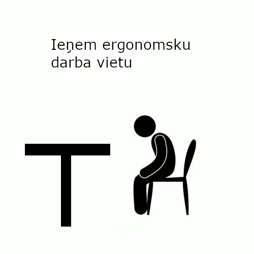
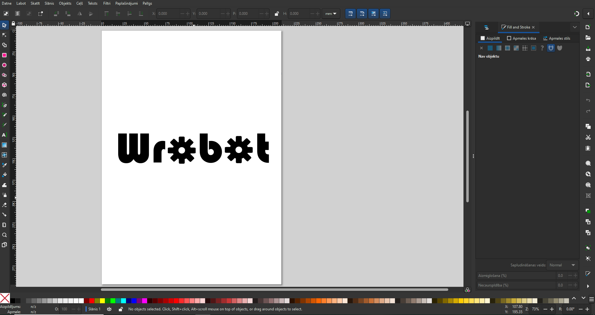
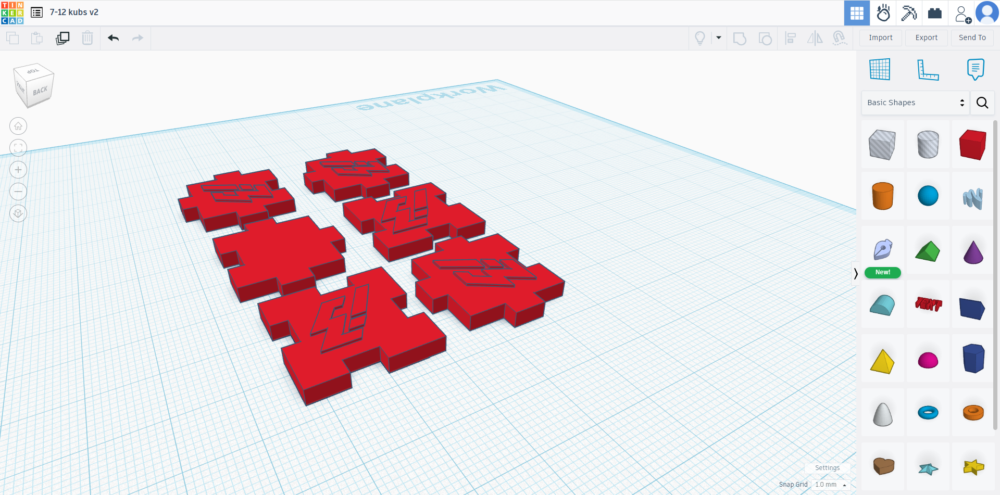
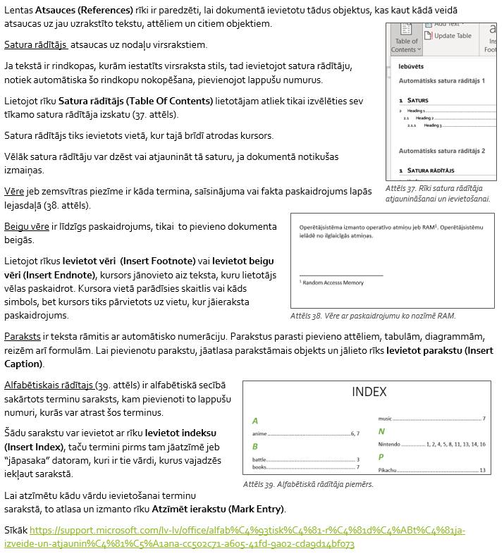
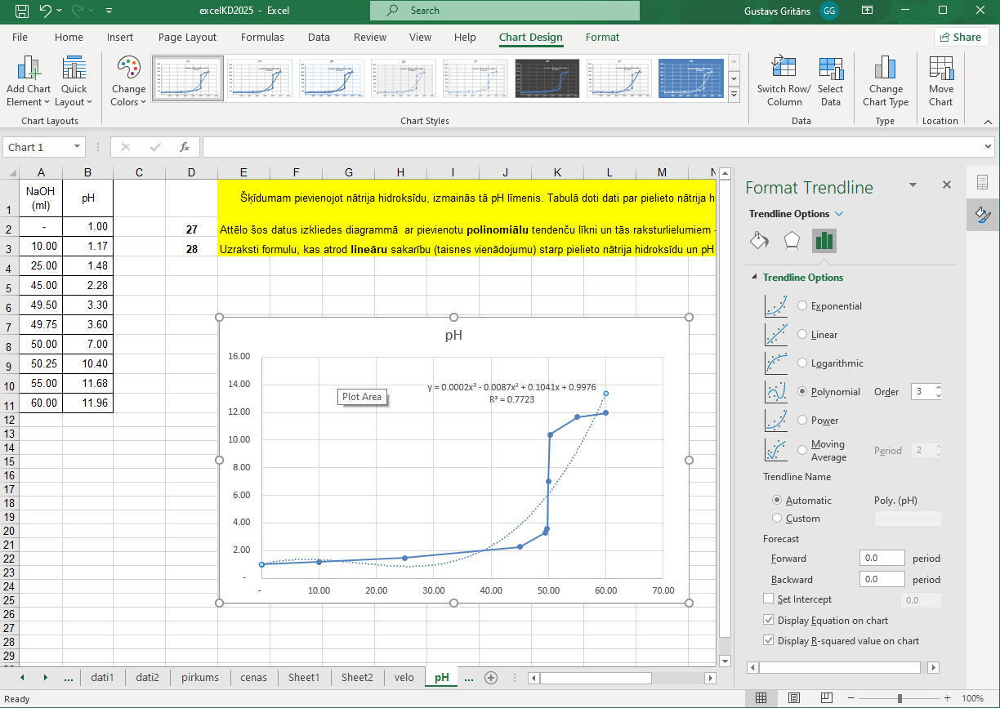

Gada sākumā apguvām pamata prasmes attēlapstrādē
Vispirms pievērsāmies rastrgrafikai, un izmantojām populāro bezmaksas programmu "Gimp". Apguvām gan attēlapstrādes, gan plakātu veidošanas metodes.
Pēc tam apskatījām vektorgrafikas efektīvu izmantošanu, veidojot logo programmā "Inkscape".
Nākamā lieta, ko mācījāmies bija, kā veidot 3d failus, un šīs prasmes iesaistījām projektā, kurā veidojām reklāmas objektu. Izmantojām interneta programmu "Tinkercad".
Tad apguvām videoapstrādes pamatus, un veidojām montāžu, par iepriekš minētā objekta izstrādi.
Apguvām visdažādākās tekstapstrādes prasmes Microsoft progrmmā Word. Papildus pamata darbībām īpaša uzmanība tika pievērsta,kā ievietot atsauces, jo tas, pieņemams īpaši noderēs nākotnē.
Pielietoām "Excel", lai macītos veiksmīgi un efektīvi apstrādāt lielu daudzumu datu.
